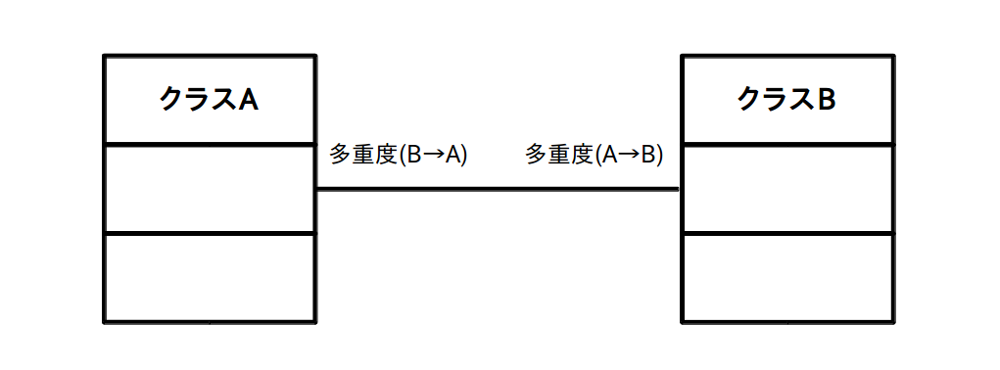

関連
次に「関連」について学びます。
前に書いたように「関連」は更に「集約」「コンポジション」「依存」の３つのサブ関係に分かれますが、まずは「関連」そのものについて説明します。
「関連(Association)」は2つ以上のクラスが「何らかの関係(※)」を持っていることを表す用語です。
※ 漠然としていて分かりにくいですが、具体的には「互いに情報をやりとりしている」「主従関係がある」「一方がもう一方の構成物になっている」等が何らかの関係の例として挙げられます。
「関連」をクラス図で表す場合はクラス間を「リンク」と呼ばれる線で結び、リンクの上に「多重度」を記述します(図1)。
図1 関連のクラス図の基本 (クリックで拡大)

この例ではクラスAとクラスBの間にリンクが張られていますので、お互いに何らかの関係があるという事が分かります(※)。
また「多重度(A→B)」はAの1つのインスタンスから見てBのインスタンスはいくつ関係しているかということを示しています。
※ ただし具体的にどういう関係があるかはこの図だけでは分かりません。
これだけだと分かりにくいので、具体的な例を挙げて説明します。
例えば次の車(CAR)とタイヤ(TIRE)の関係を表したクラス図を見て下さい(※)。
※ この例の様にクラス名が入ると互いの関係がクリアになることが多いです。
今回はTIREがCARの構成物であることを意味しています。
図2 関連のクラス図の例 (クリックで拡大)

この図の見方には2通りの方向があって、
車(CAR)→タイヤ(TIRE)方向で見た場合は多重度が4なので
「1台の車にはタイヤが4個ついている」
タイヤ(TIRE)→車(CAR)方向で見た場合は多重度が1なので
「1個のタイヤは1台の車に取り付けられている」
という見方になります。なお多重度については次のページでも詳しく説明したいと思います。